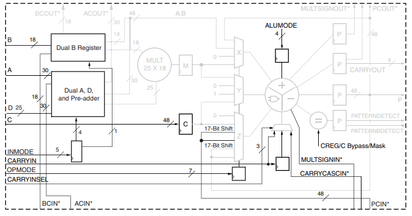
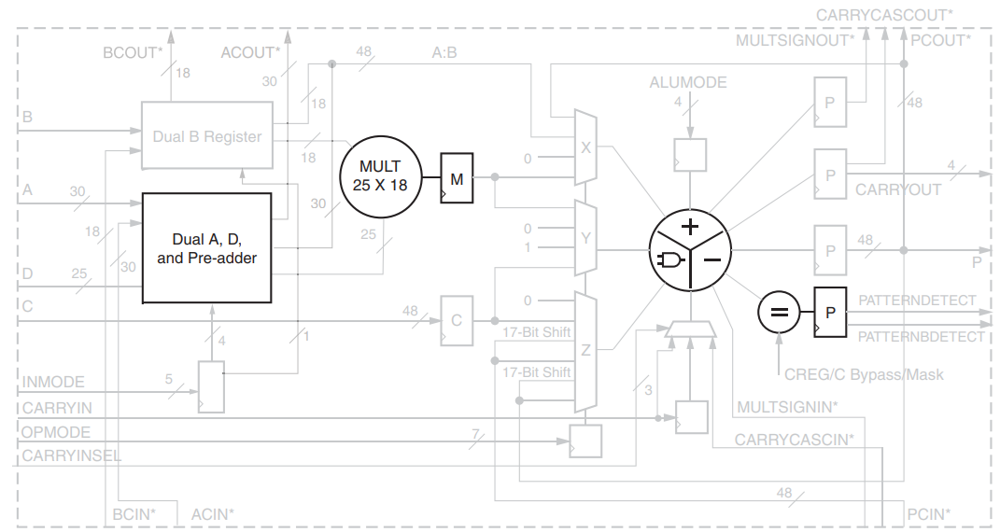
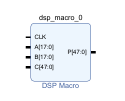

Part5-DSP
What is DSP48E1？
DSP48E1 Slice 是 Xilinx 7 系列 FPGA 中專門用於高速數位訊號處理（DSP）的硬體資源。它整合了一組 Configurable 的乘法器、加法器、累加器與邏輯單元，並可用於高效能運算中。

🔧 組成與功能 DSP48E1 Slice 主要包含以下元件：
-
25×18 乘法器（Multiplier）
可處理兩數相乘，支援二補數。 -
48-bit 三輸入加法器 / 累加器（Accumulator / ALU）
支援加、減、累加、邏輯運算（AND, OR, XOR 等）。 -
Pre-Adder
D + A，在進入乘法器前做前處理，常用於 Symmetric filter。 -
Pattern Detector
可用於溢位/收斂捨入偵測、自動重設。 -
SIMD 模式（Single Instruction Multiple Data）
支援 2×24-bit 或 4×12-bit 並行運算。 -
可程式化管線暫存器
支援高效能管線設計。
Part 5.1 Input Port

| Port 名稱 | 功能說明 |
|---|---|
| A, B, C | 數據輸入，A 和 B 是乘法器輸入，C 是第二階段加法器的輸入。 |
| D | 可用於 Pre-Adder 或乘法器的輸入，寬度為 25-bit。搭配 A 做 D+A。 |
| INMODE | 控制 D、A、B 輸入來源與 Pre-Adder 功能（共 5 個 bits），可設定 Pre-Adder 開關、輸入組合與選擇。 |
| CARRYIN | 外部來的進位輸入，用於加法或累加操作。 |
| CARRYINSEL | 控制 CARRYIN 的來源。 |
| OPMODE | 控制多工器的運算路徑選擇，定義 DSP 的操作模式。 |
| BCIN / ACIN | Cascade input，允許將前一個 DSP48E1 的輸出直接輸入下一個。 |
| PCIN | 前一 DSP slice 的輸出累加器結果輸入。 |
| ALUMODE | 控制 ALU（邏輯/加法）單元的操作模式。 |
| CARRYCASCIN | Cascade 進位輸入，來自前一個 DSP slice 的進位結果。 |
| MULTSIGNIN | 乘法結果的符號位輸入，用於多階乘加運算串接。 |
Part 5.2 Output Ports

| Port 名稱 | 功能說明 |
|---|---|
| P | 48-bit 的主輸出，用於乘加、加法、累加等結果輸出。可以經由 PCOUT cascade 至下一個 DSP48E1 的 PCIN，形成資料串接。 |
| PCOUT | P 的內部 cascade 輸出，用於將運算結果串接給下一個 DSP48E1。 |
| CARRYOUT[3:0] | 4-bit carry 輸出，視 SIMD 模式而定代表不同加法區段的進位。只有某些模式下的特定位元才是有效值。 |
| CARRYCASCOUT | 1-bit cascade 進位輸出，對應於 CARRYOUT，但在硬體上是獨立的，用於多階加法/乘加運算的串接。也可被回饋至 CARRYINSEL。 |
| MULTSIGNOUT | 乘法器結果的 MSB，用於延伸 MACC（乘加累加）操作時傳遞乘號位，搭配 MULTSIGNIN 使用以支援 96-bit 運算。 |
| PATTERNDETECT (PD) | 用於偵測輸出結果是否符合指定樣式或其補數，並常應用於收斂捨入、飽和控制與自動重設等邏輯功能。 |
| PATTERNBDETECT (PBD) | 若 P 結果符合 pattern 的反碼，輸出 High。搭配 mask 使用可忽略部分 bit。 |
| OVERFLOW, UNDERFLOW | 透過 pattern detector 偵測加法/累加運算是否超出特定位元界限。須啟用 P 寄存器時才有效。 |
Part 5.3 Embedded Functions

| 模組功能 | 說明 | 主要參數/控制信號 | 備註 |
|---|---|---|---|
| Pre-Adder | 位於 A 輸入路徑中的 25-bit 加減器，可實作前加/前減運算 | INMODE, D, A | - 輸出送入乘法器 - 無飽和保護，建議輸入限制為 24-bit 二補數 - 最多 10 種操作模式 - 可繞過改用 D 直接輸入 |
| Multiplier | 25-bit × 18-bit 的二補數乘法器，支援乘法部分 cascade | 無需額外控制 | - 輸出 43-bit ×2 partial products（共 86-bit） - 支援 17-bit 右移後的 cascade（MULT-to-MULT 級聯） - 可模擬 unsigned 運算（將 MSB 設為 0） - 輸出可使用 MREG 做 pipeline |
| Adder / Subtracter / Logic Unit | 嵌入式 ALU 支援加、減、與邏輯運算，為三輸入結構 | OPMODE, ALUMODE, CARRYINSEL | - 3 個輸入為 X、Y、CIN（常為 PCIN/CARRY） - 加減控制由 ALUMODE 指定 - OPMODE 控制 X/Y/Z multiplexer 的輸入選擇 - 使用邏輯運算時禁止使用 multiplier |
Part 5.4 DSP Macro

🧠 DSP Macro 是什麼？
DSP Macro 是基於 DSP48E1 Slice 的封裝化 IP ，提供參數化設定與易用介面。
Instruction

在 Instructions 處設定 DSP 要處理的運算。
Pipeline Options

📘 DSP48E1 的 Pipeline Options
| 模式名稱 | 行為特性 | 使用建議 | 控制程度 |
|---|---|---|---|
| Automatic | 根據 Timing constrain 、設計複雜度自動決定是否加入 pipeline register | 簡單方便 | 最低，自動決定 |
| By Tier | 工具根據模組不同階段（輸入、乘法、輸出）做出適當平衡配置 | 讓工具微調性能/資源平衡 | 中等，自動但具層次化考量 |
| Expert | 可完全手動配置 pipeline 寄存器 | timing optimization 或極致資源控制 | 最高，手動可控 |
Implementation

在 Input Port Properties 設定處將 AUTO 模式切換成 MANUAL 模式，Output Port Properties 設定成 User Defined 即可自行設定 I/O port 的寬度。
Part 5.5 Example Project
-
Create a New Vivado Project and Create a New Block Design
-
加入
DSP Macro -
進入
DSP MacroIP 設定頁面Instructions設定為A * B。Pipeline Options設定成automatic。A、B設定 16 bits ，Output port P設定 32 bits。
-
完成設定後，加入三個
GPIO IP、Zynq CPU，完成後一樣做Block Automation、Connection Automation。完成 Block design 如下圖 :

-
Create HDL Wrapper->Generate Bitstream->Export .xsa -
依照 Part 4.4 的方法建立
Vitis Project。
Part 5.6 Run & Result
透過兩個 GPIO 寫入 A、B 的值，經過 DSP 運算完成後 ， 經由 GPIO 回傳 A * B 的結果。